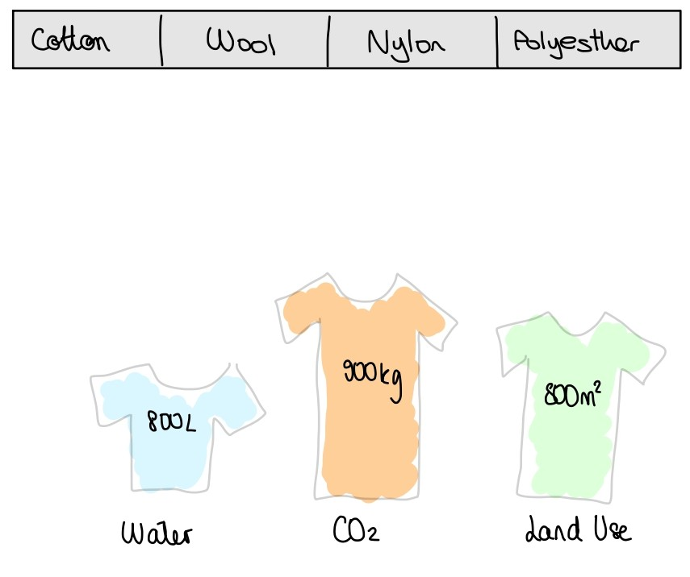

Impact Of The Textile Industry
Repartition of the carbon footprint of a swiss person
First of all, here is the average repartition of a swiss person carbon footprint :

We can see that Clothing is not that small, and more important, a part that we have a lot of influence of our footprint.
Which fabric is the best?
We can compare the water use, carbon emissions and land use for different fabrics:

So each fabric has its pros and cons. Natural ones consume in general more water and land use, but emit less carbon dioxide and consume less energy.
Conclusion: Be responsible